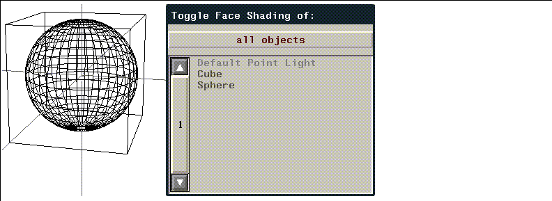

The Object Display menu allows you to define how objects are displayed in the N-Geometry window.
The commands on this menu are described later in this chapter in alphabetical order.
Changing Display Parameters for a Single Object
When you click on most operations in the Object Display section of the menu, N-Geometry displays a menu of all existing objects. If you want to toggle a display parameter for one object, (CLICK-L) on the appropriate Object Display operation.

Note that the Cube and Sphere objects are gray; this means that they are currently not shaded.
Changing Display Parameters for Several Objects
If you want to set a display parameter for several objects (e.g., shade several objects at once), (CLICK-R) on the operation.
Backfacing
If turned on, displays only the faces that are facing toward the camera. (See Figure 6.6.) N-Geometry knows which way a face is oriented by the order of the vertices in that face.
Figure 6.6 Left, backfacing off; right, backfacing on
Hard Edging
The Hard Edging command displays the boundaries of faces when faces meet at an angle greater than a specified amount, that is, at hard edges. This option is useful when animating (with N-Dynamics) if you want to turn off the display of edges with edges harder than the specified value.
Figure 6.7 shows an object in its original state, and with hard edging turned on to reduce the number of displayed edges:
Local Axes
The Local Axes command toggles the display labeled local axes of terminal objects. Displaying local axes makes it easy to see where an object's origin is (see Figure 6.8.) This feature makes it easier to visualize transformations, many of which are relative to the local axes.
Figure 6.8 Displaying local axes makes it easy to see how a transform operation will work
Normals
Vertices, edges, faces
Figure 6.9 Left, cube with point normals displayed; middle, edge normals; right, face normals
Points
The Points command shows the object with all its nodes, or points, displayed as dots. (See Figure 6.10.) This type of presentation is especially useful with wires or with objects that have many vertices with only two adjacent edges, which might appear to blend together if the angle between them is fairly small.
Sensitivity
You can specify mouse sensitivity by object. This capability enables you to use background objects for reference without making it difficult to select elements on the object you are actively using. (In addition, bounding boxes are by default not mouse-sensitive.)
Shading
The Shading command displays the objects as smooth shaded.
Stand-ins
The Stand-ins command displays a "substitute" box instead of the object itself whenever you move the camera or transform the object.
If you want any objects for which stand-ins are assigned to always display as a stand-in, see the section "Sticky Standin Bodies," on page 5-4.
Visibility
The Visibility command determines what objects can be seen in the view window.
Copyright © 1996, Nichimen Graphics Corporation. All rights reserved.